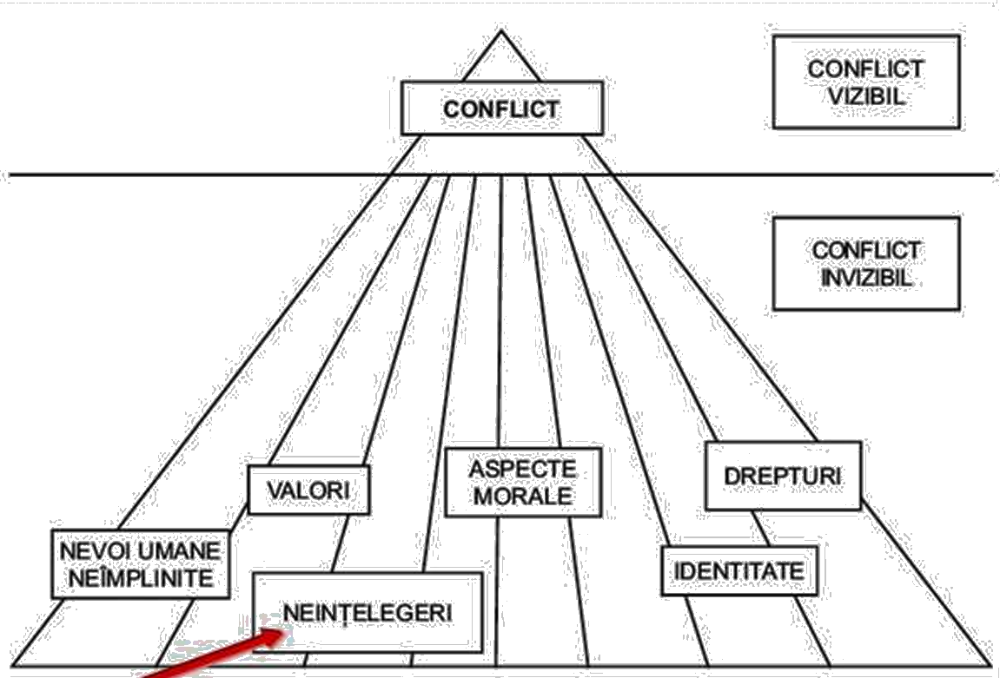

CUPRINS
COMUNICAREA SOCIALĂ
Indiferent de modul de abordare (ca act, sistem, cod sau mijloc)
comunicarea stă la baza organizării şi evoluţiei sociale, influenţând
raporturile, pe orizontală şi pe verticală între oameni, fiind
considerată drept cea mai importantă competenţă socială cu implicaţii
în manifestarea şi dezvoltarea celorlalte. Paul Watzlawick considera
comunicarea ca fiind “conditio sine qua non a vieţii omeneşti şi a
ordinii sociale”.
Profesorul Emilian M. Dobrescu (Sociologia comunicării, Bucureşti,
1998) consideră comunicarea un concept fundamental în sociologie şi în
psihologia socială şi grupează accepţiile ce i se atribuie după cum
urmează:
- proces în care se observă stimuli şi se reacţionează în raport cu aceştia;
- mecanism esenţial în dezvoltarea relaţiilor umane;
- totalitatea simbolurilor gândirii şi a mijloacelor prin care ele se difuzează şi se conservă;
- comunicare socială – expresie generală pentru „toate formele de relaţii sociale, cu participarea conştientă a indivizilor şi a grupurilor”.
O definiţie mai largă – ce plasează comunicarea nu numai la nivelul
speciei umane, ci şi la nivel biologic – citează profesorul Aurelian
Bondrea în cartea sa Sociologia opiniei publice şi a mass- media
(Bucureşti, 1997), după Gilles Amado şi André Guittet. Conform
acestora, „există comunicare de fiecare dată când un organism
oarecare, în particular un organism viu, poate afecta un alt organism,
modificându-l sau modificându-şi acţiunea, pornind de la transmiterea
unei informaţii (şi nu printr-o acţiune directă, precum cea pe care o
exercită o forţă fizică punând în funcţiune o energie)”
Din punct de vedere sociologic comunicarea (de masă) este privită ca
„un ansamblu de modalităţi reţele de transmisie, echipamente
individuale şi autonome care permite punerea la dispoziţia unui public
destul de larg a unei multitudini de mesaje".
Cercetătorii comunicării sunt de acord că toate procesele sociale
implică şi un proces de comunicare: “Numai în aparenţă societatea este
o sumă statică de instituţii sociale; în realitate, ea este reanimată
sau reafirmată creator în fiecare zi de acte particulare de natură
comunicativă care au loc între indivizii ce o alcătuiesc. Orice
structură culturală, orice act individual care ţine de comportamentul
social implică, într-un sens explicit sau implicit, comunicare” (E.
Sapir).
Simplu spus, comunicarea este un proces de transmitere a informaţiilor
între indivizi sau între grupuri sociale. De aceea, relaţiile umane
pot fi numite interacţiuni comunicaţionale. Astfel încât conceptul de
comunicare a devenit, în epoca noastră, unul universal şi
larg-cuprinzător pentru că totul, dar absolut totul, comunică.
Importanţa socială a comunicării a fost certificată ireversibil în
momentul în care unul dintre fondatorii interacţionismului
contemporan, sociologul Charles Horton Cooley, a reuşit să argumenteze
teza prin care afirma că natura umană este dobândită şi nu transmisă
genetic. Se punea, astfel, punct lungii discuţii pe tema
“natură-societate”, în 1908, când Cooley publica Human Nature and the
Social Order.
În această tensiune “istorică” dintre natură şi societate limba a fost
neobositul mediator care a adus laolaltă contrariile, punctele de
vedere situate la poli diferiți, prietenii și adversarii, reuşind, de
cele mai multe ori, să permită evitarea sau amânarea confruntărilor
“definitive”. “Prinsă” într-un asemenea travaliu de legitimare a
lumii, contra cronometru, nu apare ca acceptabilă sintagma limbă
privată (George Steiner). “Permanenţa noastră este asigurată de
cultură şi sintaxă, de matricea culturală asigurată de sintaxă. Acesta
este, desigur, motivul real pentru imposibilitatea existenţei unei
limbi private. Orice cod cu un sistem pur individual de referinţă este
lipsit de orice valoare existenţială.
Cuvintele pe care le folosim conţin informaţii mult mai multe şi o
încărcătură emoţională mult mai densă decât cele de care dispunem noi
în mod conştient; ele multiplică ecoul”. Sigur că orice cod, pentru a
fi operaţional, nu poate utiliza sisteme individuale de referinţă,
deoarece comunicarea nu se produce decât atunci când sistemele de
emisie şi cele de recepţie ajung la un acord, adică atunci când
atribuie aceeaşi semnificaţie semnalelor şi simbolurilor pe care le
folosesc. Imposibilitatea existenţei unei limbi private, irelevanţa
unui sistem individual de referinţă, accentuarea rolului sintaxei şi
al limbajului par a justifica, toate, aspectul social al comunicării.
Limbajul stabileşte relaţii complexe cu societatea6, de dependenţă şi
de interdependenţă. Ca entitate categorială, limba este o dimensiune
interioară a omului – în calitatea sa de fiinţă socială. Ca sistem
semiotic, convenţional şi convenţionalizat, cu o paradigmă (parţial
închisă, parţial deschisă), este un instrument de comunicare. Iată cum
definea caracterul imutabil al limbii F. de Saussure: „Dacă, în raport
cu ideea pe care o reprezintă, semnificantul apare ca fiind liber
ales, în schimb, în raport cu comunicarea lingvistică care îl
foloseşte, el nu este liber, este impus. Masa socială nu este deloc
consultată şi semnificantul ales de limbă n-ar putea fi înlocuit cu un
altul. Acest fapt, care pare a cuprinde o contradicţie ar putea fi
numit, în mod familiar“cartea de joc impusă”.
Interacţiunea şi comunicarea sunt două feluri de acţiune socială,
interacţiunea fiind termenul mai cuprinzător şi înţeles ca sinonim
pentru acţiunea socială, în vreme ce comunicarea e definită ca
interacţiune cu ajutorul unor simboluri. În acest context, procesul
comunicării este văzut ca transfer de sensuri între partenerii
comunicării.
Realitatea socială este structurată pe trei niveluri:
- cel al personalităţii sociale (personalitate rezultată din socializare),
- al acţiunii şi raporturilor sociale (complexitatea interrelaţiilor ce se stabilesc în interiorul formelor concrete de organizare socială),
- al sistemului social global.
Scopurile aflate în sfera de influenţă a comunicării se bazează pe
comunicarea strategică, atracţia interpersonală, dezvoltarea
relaţiilor, comunicarea non-verbală, comunicarea familială, stilul
vorbirii, negocierea, conflictele interpersonale, comunicarea în
cadrul grupurilor mici etc., care au dobândit în timp o identitate
proprie.
Deoarece “omul este o fiinţă socială, comunicaţională, deci o fiinţă
care nu poate exista în afara comunicării cu membrii grupului său şi
al ambianţei sociale generale”, personalitatea indivizilor aflaţi
într-o anumită societate, motivaţiile şi interacţiunile lor nu sunt în
totalitate compatibile cu exigenţele vieţii organizaţionale, iar
mediul social, cadrul imediat al acţiunii şi existenţei sociale este
grupul.
Totalitatea raporturilor interumane care fundamentează socialitatea,
sociabilitatea, solidaritatea şi acţiunea colectivă presupun, cu
necesitate, un proces de comunicare.
COMUNICARE ȘI CONFLICT
Aproape fiecare problemă, fiecare conflict şi fiecare neînţelegere are
la bază o problemă de comunicare. Conflictele încep cu ivirea unei
tensiuni care poate fi determinată, printre alte cauze, de existența
unor diferenţe întâmplătoare de opinie. Din momentul în care părțile
se percep a fi în conflict, opiniile lor devin mult mai importante și
fiecare actant va concepe strategii prin care să îi convingă pe
ceilalți. Diferenţele de opinie duc la dispute, în cadrul cărora
fiecare parte încearcă să facă presiuni asupra celeilalte în sensul
impunerii perspectivei proprii prin comunicare.

La baza conflictelor pot sta neînțelegeri determinate de comunicarea
defectuoasă. Interpretări eronate ale semnelor evidențiate în
comunicare prin limbajul trupului sau prin limbă, prin elemente
neechilibrate de expresivitate – generează foarte ușor conflict.
Reciproca este valabilă: elucidarea neînțelegerilor prin revenirea în
comunicare cu elemente relevante – constituie singura cale rațională
și morală de soluționare a situațiilor conflictuale. Comunicarea
transferă conflictul de la nivel strict emoțional la nivel
preponderent rațional, fapt care face posibilă identificarea căilor de
rezolvare, detensionarea.
COMUNICAREA ORGANIZAȚIONALĂ
O organizaţie de succes trebuie să fie: o entitate unificată şi
coordonată, cu o structură şi o strategie de comunicare. Pentru
atingerea acestui scop, o organizaţie trebuie să comunice la toate
nivelurile, în plan intern – pe verticală şi orizontală – şi în plan
extern, utilizând reţele de comunicare interne şi externe. În cazul
organizaţiei, comunicarea se defineşte ca proces prin care are loc
schimbul de mesaje în vederea realizării obiectivelor individuale şi
comune ale membrilor ei.
“În toate mediile se conştientizează tot mai mult faptul că o
societate, o instituţie sau o întreprindere se constituie şi se menţin
datorită şi prin intermediul numeroaselor lor procese şi reţele de
comunicare, care le dau coerenţă. Lucrurile stau la fel pentru toate
relaţiile umane. Începem a sesiza faptul că acţiunea comunicaţională
şi acţiunea organizaţională depind reciproc una de alta”.
Relaţiile organizaţionale au ca suport comunicarea interpersonală.
Fiind un proces complex, comunicarea antrenează, însă, dincolo de
latura structurală, şi alte aspecte ale existenţei organizaţiei:
tehnice, economice, psihologice, educaţionale, culturale etc.
Complexitatea comunicării aduce în planul practicii o cerinţă specială
faţă de manager: abilitatea de a fi un bun comunicator. Or, această
abilitate se dezvoltă în primul rând pe înţelegerea rolului
comunicării organizaţionale.
La întrebarea „de ce comunicăm într-o organizaţie?“ pot exista o
multitudine de răspunsuri, câteva fiind însă unanim acceptate:
- funcţiile managementului nu pot fi operaţionale în lipsa comunicării. Procesele de stabilire a obiectivelor, de realizare a concordanţei cu structura organizatorică şi informaţională, de armonizare a acţiunilor cu obiectivele iniţiale şi de eliminare a defecţiunilor, de antrenare a personalului, se bazează pe primirea şi transmiterea de mesaje. Comunicarea este, deci, crucială pentru existenţa şi succesul organizaţiei, ea fiind prima responsabilitate a managerului;
- comunicarea stabileşte şi menţine relaţiile dintre angajaţi, oferindu-le informaţiile necesare orientării şi evaluării propriei munci în raport cu a celorlalţi, cu cerinţele organizaţiei, în ansamblul său, şi a mediului acesteia;
- prin feed-back-ul realizat, comunicarea relevă posibilităţile de îmbunătăţire a performanţelor individuale şi generale ale organizaţiei;
- aflată la baza procesului de motivare, comunicarea face posibilă identificarea, cunoaşterea şi utilizarea corectă a diferitelor categorii de nevoi şi stimulente pentru orientarea comportamentului angajaţilor spre performanţă şi satisfacţii;
- contribuie la instaurarea relaţiilor corecte şi eficiente, de înţelegere şi acceptare reciprocă între şefi şi subordonaţi, colegi, persoane din interiorul şi exteriorul organizaţiei.
Se poate afirma că este imposibil de găsit un aspect al muncii
managerului care să nu implice comunicarea. Problema reală a
comunicării organizaţionale nu este dacă managerii se angajează sau nu
în acest proces, ci dacă ei comunică bine, nesatisfăcător sau
insuficient.
Pentru a putea fi caracterizată drept organizată, comunicarea
organizaţională trebuie să prezinte următoarele caracteristici:
- să fie orientată spre finalitate (scop), adică să reflecte un plan de ansamblu şi obiectivele pe care şi le asumă organizaţia
- să fie multidirecţională, adică să se realizeze de sus în jos, pe orizontală, pe verticală etc.
- să fie instrumentală, adică să se sprijine pe o varietate de suporturi în funcţie de obiectiv
- să fie adaptată, adică să folosească sistemele de informare specifice fiecărui sector de activitate şi să concorde cu cultura organizaţională promovată
- să fie flexibilă, pentru a integra comunicarea informală şi pentru a crea structurile care o favorizează.
Drept urmare, comunicarea organizaţională nu este un proces spontan şi
natural. Ea trebuie proiectată în aşa fel încât să permită:
- coordonarea: proces ce are în vedere atingerea unui obiectiv prestabilit, necesar pentru realizarea scopului final al organizaţiei
- armonizarea : activitate ce are drept scop definirea unui obiectiv comun.
O organizaţie care se doreşte comunicantă trebuie să prezinte anumite
caracteristici:
- să fie deschisă, pentru a putea comunica cu exteriorul, emiterea, respectiv receptarea de mesaje constituindu-se într-un proces interactiv
- să fie evolutivă, adică să nu valorizeze rutina, ci inovaţia
- să fie suplă pentru a permite un dozaj oportun al comunicării formale şi informale
- să fie orientată explicit spre finalitate, pentru a crea cadrul cel mai potrivit pentru desfăşurarea comunicării formale
- să responsabilizeze, pentru a evita acumulările artificiale de putere prin stocarea de informaţii
- să fie dinamică, pentru a putea crea prin intermediul informării, specializării şi comunicării potenţialităţii interne şi mijloacele de a le transforma în realitate.
Organizaţia comunicantă nu poate fi deci, una birocratică. Ea
presupune o organizare a muncii care favorizează implicarea, spiritul
de echipă şi un management de tip participativ.
COMUNICARE ȘI MANIPULARE
Diferenţa fundamentală între persuasiune şi manipulare este că, în
timp ce persuasiunea face apel la logică, la raţiune şi încearcă
schimbarea de opinii pe bază de argumente,manipularea se foloseşte de
instrumente care se adresează, în principal, subconştientului şi
obţine astfel schimbări de opinii care nu pot fi susţinute sau
motivate logic, prin argumente.
Manipularea reprezintă acțiunea prin care un actor social (persoană,
grup, colectivitate) este determinat să gândească și/sau să acționeze
într-un mod compatibil cu interesele inițiatorului, și nu cu
interesele sale, prin utilizarea unor tehnici specifice, distorsionând
intenționat adevărul, dar care lasă impresia libertății de gândire și
de decizie. manipularea vizează un câștig sau un beneficiu material
sau emoțional unilateral, al unei singure părți.